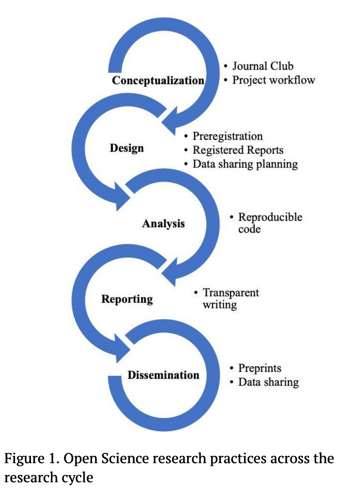

Reproducible Analyses
What is it and why should I care?
1 Replication
“There is increasing concern that in modern research, false findings may be the majority or even the vast majority of published research claims”
– Ioannidis (2005)
- replication refers to the re-running a previous experiment with as few differences as possible
- aim: determine whether the original results were robust and are replicable
- if yes, great! the original findings are reliable
- if no, hmm, maybe the original findings were false positives? or due to some other factor?
- in recent years, researchers have tried to replicate classic studies in their field
- but in many cases, they did not get the same effects the original study reported (and were famous for)
- this began the replication crisis
1.1 An example from language research
- Nieuwland et al. (2018): a direct replication
- a multi-lab replication of DeLong, Urbach, and Kutas (2005)’s impactful paper
- DeLong, Urbach, and Kutas (2005): reported N400 effects elicted at unexpected nouns, but also on preceding determiners (English a/an) when it signalled an unexpected word,
- e.g., The day was breezy so the boy went outside to fly…a kite/*an airplane
- taken as evidence of pre-activation of phonological form, graded by cloze probability
- Nieuwland et al. (2018): replicated N400 at noun, but not at adjective
- DeLong, Urbach, and Kutas (2005): reported N400 effects elicted at unexpected nouns, but also on preceding determiners (English a/an) when it signalled an unexpected word,
- a multi-lab replication of DeLong, Urbach, and Kutas (2005)’s impactful paper
- Laurinavichyute, Yadav, and Vasishth (2022); ; Peels (2019); Penders, Holbrook, and de Rijcke (2019); T. Roettger et al. (2022); T. B. Roettger (2021); Sönning and Werner (2021); Kathawalla, Silverstein, and Syed (2021)
2 Reproducibility
- reproducibility refers to the ability to reproduce somebody’s analyses with their
- data
- and code
2.1 Replication vs. Reproducibility
- replication of a study
- repeating an experiment
- getting similar results
- reproducibility of analyses
- repeating analyses of the same data
- getting the same results
- e.g., when you submit a paper to a journal, they make ask for your data and code so reviewers can reproduce your analyses
- requires data and code
- if you have interesting findings, other researchers (or future you) may want to replicate your study to see if they can replicate your findings
- (may require) stimuli, set-up and presentation information, participant demographics
3 Open Science: Why should I care?
- It’s good science
- Science is cumulative. We should ensure we’re building on reliable, robust findings
- Because the field cares
- replication/reproducibility are beginning to be foregrounded by e.g., journals/job advertisements
- Helps future you
- pre-registration, reprodubible analyses, clean and sharable data all help future you
3.1 What can I do?
- there are aspects of open science that we can choose to implement
- some suggestions from Kathawalla, Silverstein, and Syed (2021):
Level: Easy
- Journal Club
- Project workflow
- Pre-prints
Level: Medium
- Reproducible code
- Sharing data
- Transparent manuscripts
- Pre-registration
Level: Difficult
- Registered reports
4 How to do better science
- don’t be afraid of making mistakes
- (most) researchers aren’t statisticians or programmers
- do the best you can, and be transparent
- doing some of the steps is better than doing none
5 What will we learn here?
Design and Reporting
- Preregistration/Registered Reports
- Transparent writing
Analysis
- Reproducible code
- with open source software (R, RStudio, packages)
- dynamic reports with Quarto/Rmarkdown
- Project workflow
- folder structure
- how to sensibly set up your folders
- contained environments
- using RProjects and the
herepackage
- using RProjects and the
- folder structure
knitr::include_graphics(here::here("mats/day1/2-reproducibility/media/Kathawalla_research_cycle.png"))
6 R is for Reproducibility
- we will be working with R, RStudio, Quarto, and RProjects
- R: a programming language for statistical computing and graphics
- RStudio: an integrated development environment (IDE)
- RStudio Desktop
- RStudio Server
- Quarto (similar to Rmarkdown): dynamic reports
- combining text, code, and printed tables and figures
- RProjects: a workflow tool
- contains all files necessary for a project
- works with relative file paths
Students: open R, then RStudio, then create an RProject Me: show them each on my computer - R can run code and save a script - RStudio has so many more options (cheatsheet) - RProjects keep everything tidy and together
7 Exercises
7.1 R
- Open R
- write
3*32and hit Enter - write
print("Hello World!") - write
x <- 3*32 - write
y <- "Hello World!" - write
x - write
y
- write
7.2 RStudio
- Open RStudio
- locate the Environment, Files, and Console panes
- File > New File > R script
- write
3*32and hit Enter - write
print("Hello World!") - write
x <- 3*32 - write
y <- "Hello World!" - write
x - write
y - add comments describing each step using
# - File > Save As
7.3 Quarto1
- Create a new Quarto document
- File > New File > Quarto Document
- Read the instructions
- Practice running the chunks individually
- render the document
- verify that you can modify the code, re-run it, and see modified output
- Create one new Quarto document for each of the three built-in formats: HTML, PDF and Word.
- Render each of the three documents
- How do the outputs differ?
- How do the inputs differ?2
7.3.1 Quarto cont’d
- Choose a Quarto document:
- give it a title, your name (author), and unclick ‘Use visual markdown editor’
- Render
- YAML:
title: "Eye-tracking during reading"subtitle: "Lecture 2 notes"author: [YOUR NAME]date:`rSys.Date()`- Render
References
DeLong, Katherine A., Thomas P. Urbach, and Marta Kutas. 2005. “Probabilistic Word Pre-Activation During Language Comprehension Inferred from Electrical Brain Activity.” Nature Neuroscience 8 (8): 1117–21. https://doi.org/10.1038/nn1504.
Ioannidis, John P.A. 2005. “Why Most Published Research Findings Are False.” PLoS Med 2 (8): 2–8. https://doi.org/10.1371/journal.pmed.0020124.
Kathawalla, Ummul-Kiram, Priya Silverstein, and Moin Syed. 2021. “Easing Into Open Science: A Guide for Graduate Students and Their Advisors.” Collabra: Psychology 7 (1): 18684. https://doi.org/10.1525/collabra.18684.
Nieuwland, Mante S, Stephen Politzer-Ahles, Evelien Heyselaar, Katrien Segaert, Emily Darley, Nina Kazanina, Sarah Von Grebmer Zu Wolfsthurn, et al. 2018. “Large-Scale Replication Study Reveals a Limit on Probabilistic Prediction in Language Comprehension.” eLife 7 (April): e33468. https://doi.org/10.7554/eLife.33468.
Peels, Rik. 2019. “Replicability and Replication in the Humanities.” Research Integrity and Peer Review 4 (1): 2. https://doi.org/10.1186/s41073-018-0060-4.
Penders, Holbrook, and de Rijcke. 2019. “Rinse and Repeat: Understanding the Value of Replication Across Different Ways of Knowing.” Publications 7 (3): 52. https://doi.org/10.3390/publications7030052.
Roettger, Timo B. 2021. “Preregistration in Experimental Linguistics: Applications, Challenges, and Limitations.” Linguistics 59 (5): 1227–49. https://doi.org/10.1515/ling-2019-0048.
Roettger, Timo, Agata Bochynska, Erin Buchanan, Joseph Casillas, Caitlin Halfacre, Liam Keeble, Melanie Röthlisberger, Irys-Amélie Champagne, and Kaidi Chen. 2022. “Reproducible Research Practices and Transparency in Linguistics,” August. https://doi.org/10.17605/OSF.IO/J2Q5P.
Sönning, Lukas, and Valentin Werner. 2021. “The Replication Crisis, Scientific Revolutions, and Linguistics.” Linguistics 59 (5): 1179–1206. https://doi.org/10.1515/ling-2019-0045.